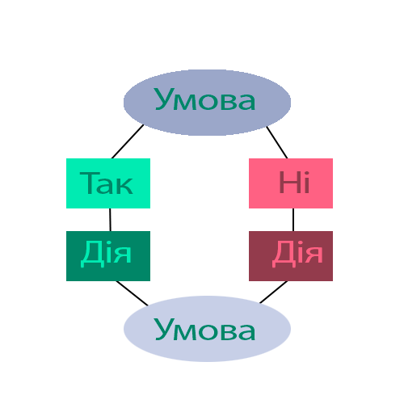
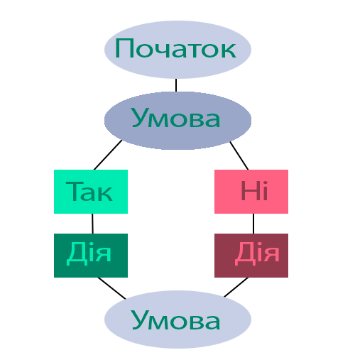

Алгоритм — це скінченна послідовність чітко визначених кроків (інструкцій), які однозначно описують порядок виконання дій для досягнення заданої мети або розв’язання задачі.
Основні характеристики алгоритму:
Скінченність — алгоритм має завершуватися після виконання обмеженого числа кроків.
Однозначність — кожна команда алгоритму має бути точно визначеною.
Масовість — алгоритм застосовується до певного класу задач.
Результативність — виконання алгоритму обов’язково приводить до результату.
Властивості алгоритмів:
Дискретність — процес виконання алгоритму розбивається на окремі етапи (кроки).
Формальність — виконавець алгоритму діє строго за вказівками, не потребуючи додаткових пояснень.
Зрозумілість — алгоритм повинен бути зрозумілим виконавцю.
Ефективність — алгоритм має досягати мети з мінімальними затратами ресурсів.
Форми подання алгоритму:
Словесно-описова форма — використання текстового опису для опису кожного кроку.
Графічна форма — представлення алгоритму у вигляді блок-схем.
Програмний код — запис алгоритму мовою програмування.
Таблична форма — організація алгоритму у вигляді таблиць для відображення умов і дій.
Виконавець алгоритму
Це об’єкт (людина, машина чи програма), який виконує команди алгоритму. Виконавець повинен розуміти команди алгоритму та мати необхідні ресурси для їх виконання.
Система команд виконавця алгоритму:
Це набір інструкцій, які здатний виконати виконавець. Вона визначає можливості виконавця:
Прості команди — базові операції (додати, відняти, перемістити тощо).
Складені команди — комбінації простих команд, що утворюють складніші дії.
Команди керування — операції для управління виконанням алгоритму (умови, цикли).
Базові структури алгоритмів:
Слідування — послідовне виконання команд (лінійна структура).
Розгалуження — вибір між альтернативними командами в залежності від умови.
Повторення — багаторазове виконання однієї чи кількох команд (цикл).
Графічні схеми базових структур алгоритмів:
[ Початок ] → [ Дія 1 ] → [ Дія 2 ] → [ Кінець ]


Застосування комп’ютерного моделювання:
Наука — моделювання фізичних, хімічних чи біологічних процесів.
Інженерія — створення прототипів і випробування конструкцій.
Економіка — прогнозування фінансових тенденцій.
Освіта — розробка навчальних симуляторів.
Знання основ алгоритмізації дозволяє розробляти ефективні моделі, оптимізувати процеси і забезпечувати точність у розв’язанні складних задач.